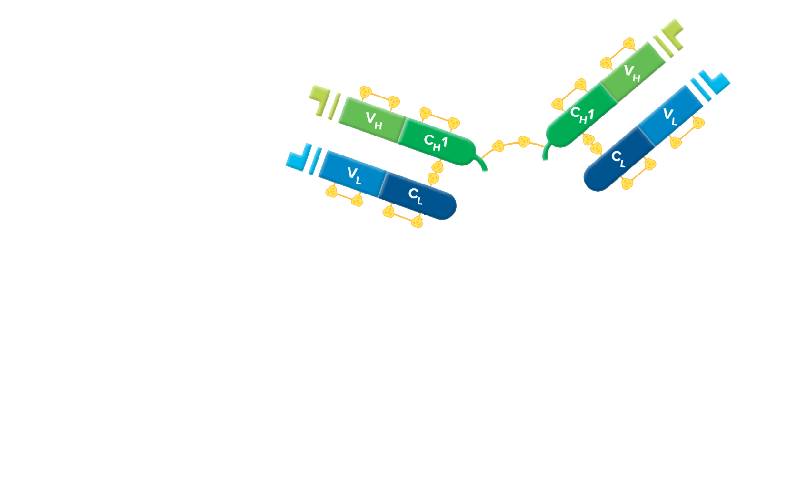
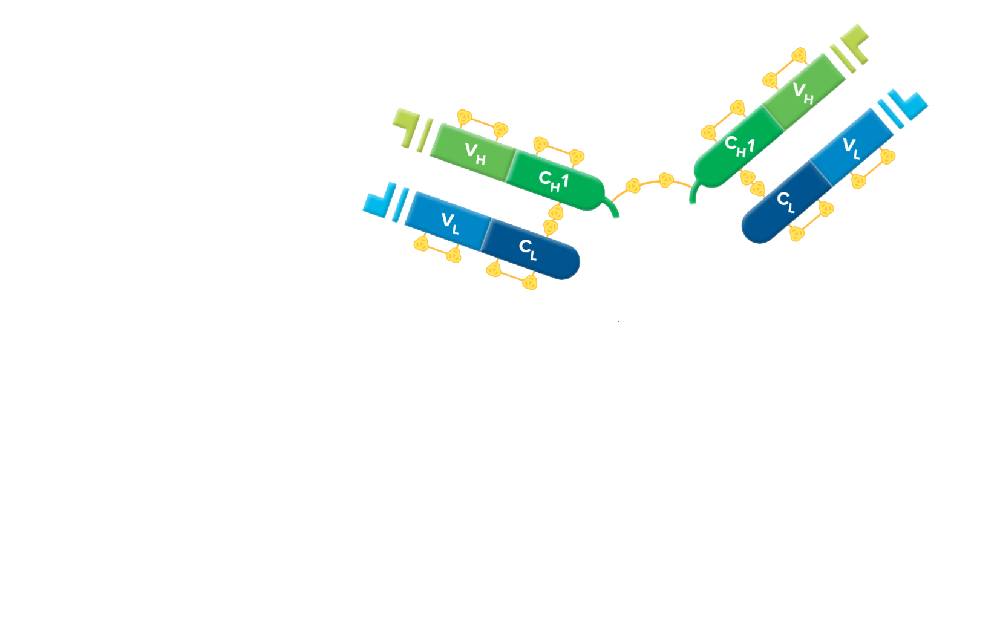

F(ab')2 Fragment Affinity-Purified Secondary Antibodies

 



F(ab')2 fragment antibodies are generated by pepsin digestion of whole IgG antibodies to remove most of the Fc region while leaving intact some of the hinge region. F(ab')2 fragments have two antigen-binding Fab regions linked together by disulfide bonds, and therefore they are divalent. The average molecular weight is about 110 kDa. They are used for specific applications, such as to avoid binding of secondary antibodies to live cells with Fc receptors or to Protein A or Protein G
Binding of primary antibodies to Fc receptors also may occur if they are whole IgG antibodies, creating background regardless of the form of the secondary antibody. To block whole IgG primary and secondary antibodies from binding to Fc receptors, incubate cells in buffer containing 5% normal serum from the host species of the labeled secondary antibody. To prevent capping, endocytosis, and regeneration of Fc receptors on living cells, incubate at 4°C in buffer containing 5% normal serum with sodium azide added to inhibit metabolism. See Blocking and Controls section (pages 143-155) for more information on avoiding background.
We also have a limited inventory of DyLight™ 488 / 549 / 594 / 647, Cy™2, Cy™5, and Texas Red® conjugated secondary antibodies.